In short: how files are added and recognized, where results are written, how image calibration works, and how to check and filter subframes before integration.
Settings that are in the Other, Preprocessing, Integration and Postprocessing tabs are visible only in Expert mode. Settings in the Files, Settings, Tools, Enhancements and Interface tabs are visible also in Simple mode.
- Adding and recognizing files: Adding files to the script · Files accepted by the script · How the script automatically recognizes different files · Adding filter files manually
- Output directories and files: Processing root directory · Output directories · Output images and files
- Image calibration: Calibration master files · Fixing linear defects · Binning
- Blinking, sorting and filtering data: Blinking · Sorting and filtering file lists · Automatic filtering of bad files · Metrics visualizer
Adding and recognizing files
Adding files to the script

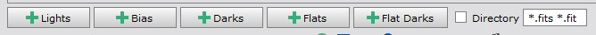
Files can be added to the script by clicking the buttons at the bottom of the Files tab.

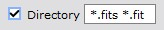
If Directory checkbox is checked then the script will recursively read all files from the selected directory and subdirectories. All files matching the file pattern will be added as image files. Selected directory will be used as the processing root directory. File pattern can have multiple file types separated by space.
Files accepted by the script
Script accepts all files that are supported by PixInsight. It can be used with FITS files from telescopes, or RAW files from DSLR. It can be used with both calibrated and non-calibrated files. For non-calibrated files the script can do image calibration.
Calibrated files from remote telescope systems like Telescope Live, iTelescope, Slooh and Deep Sky West have been tested and they work fine.
When using RAW or OSC files, the script by default does debayering of the files. It is recommended to use the Pure RAW setting in PixInsight. If the files are already debayered you should choose None in the Debayer list.
How the script automatically recognizes different files
- First script checks if the file has a FILTER keyword that specifies the image as Luminance, Red, Green, Blue, Ha, SII, OIII or Color data. The following FILTER values are recognized: Luminance, Clear, L, Red, R, Green, G, Blue, B, SII, S, Halpha, Ha, H, OIII, O, Color. If there is a FILTER keyword but it is not one of the recognized values, the file is treated as a color file. Only the first letter of the FILTER keyword is used to detect the filter type.
- If the FILTER keyword is not found then files that end with _L, _R, _G, _B, _H, _S, _O or _C are treated as filter files. For example ngc6514_R.fit is treated as a Red filter file.
- If files do not end with a filter letter then the file name is checked for text '_Luminance_', '_Red_', '_Green_', '_Blue_', '_SII_', '_Halpha_', '_OIII_'.
- Otherwise files are assumed to be color files.
If IMAGETYP keyword is set on files script can automatically detect bias, dark and flat calibration files when adding light files. Also flat dark files are recognized with a special value 'flat dark'.
Adding filter files manually

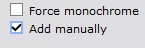
If automatic detection of the FILTER keyword does not correctly recognize the filter type, it is possible to manually add files for each filter. This can be enabled by checking 'Add manually' or 'Do not use FILTER keyword’ boxes.

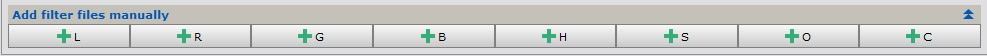
There are separate buttons for each filter type recognized by the script. Also color/OSC/DSLR files can be added manually. Manual adding is useful if the FILTER keyword is missing or just for overriding the filter keyword.
Output directories and files
Processing root directory
Processing root directory is the directory where output directories and files are created.
By default processing root directory is the directory of the first light file in the file list. If light files are read using a directory option then the selected directory is used as the processing root directory.
It is possible to give an absolute or relative path to the processing root directory using the Output directory field.
Output directories
AutoIntegrate will write output files into subdirectories.
- AutoOutput contains intermediate files generated during processing. Files in the AutoOutput directory can be deleted after the processing.
- AutoProcessed contains processed final images. Also integrated images and log output is here.
If image calibration is used then calibrated files are put into their own subdirectories.
- AutoMaster contains generated master calibration files.
- AutoCalibrated contains calibrated light files.
Output directories are created to the processing root directory
Output images and files
Output images when using mono camera
- Integrated channel images: Integration_L, Integration_R, Integration_G, Integration_B, Integration_H, Integration_S, Integration_O
These are integrated images without any additional processing or cropping. - Combined RGB image: Integration_RGB_combined
For this image channel combination or narrowband mapping is done. - Processed images: Integration_L_processed and Integration_RGB_processed
Processed images that are still in the linear stage. - Stretched images: Integration_L_HT and Integration_RGB_HT, and Integration_LRGB_HT if there is L image
- Final images: AutoLRGB or AutoRGB
Output images when using OSC/DSLR camera
- Integrated image: Integration_RGB.
Integrated image without any additional processing or cropping. - Processed image: Integration_RGB_processed
Processed image that is still in linear stage. - Stretched image: Integration_RGB_HT
- Final image: AutoRGB
Output files
- AutosaveSetup.json: By default processing information is saved into the AutosaveSetup.json file. The file can be loaded later to check the processing or to fine tune some options for different processing. If not output directory is given AutosaveSetup.json file is saved into the processing root directory AutosaveSetup.json is created only after a full processing, it is not generated after AutoContinue.
- AutoIntegrate.log: After a full processing a file AutoIntegrate.log is created. It contains the output printed to the Process Console. It is useful to check the processing steps and to see if there were any problems during processing. AutoIntegrate.log is created to the AutoProcessed directory.
- AutoContinue.log: If AutoContinue is used then a file AutoContinue.log is created. It contains the output printed to the Process Console during the AutoContinue processing. It is useful to check the processing steps and to see if there were any problems during processing. AutoContinue.log is created to the AutoProcessed directory.
- ExecutedProcesses.xpsm: When script runs a full processing it always generates ExecutedProcesses.xpsm file. It can be loaded into the PixInsight desktop as process icons to see the exact processes and settings that were used during processing. ExecutedProcesses.xpsm is created to the processing root directory.
- AstrobinInfo.csv: When script runs a full processing it always generates an AstrobinInfo.csv file. It can be used in Astrobin to describe the imaging session. Astrobin filter numbers must be configured in the Other / Astrobin section. AstrobinInfo.csv is created in the AutoProcessed directory.
Image calibration

Script can do image calibration if needed. Two basic workflows are supported:
- Calibrating with bias, darks and flats
- Calibrating with darks, flat darks (or dark flats) and flats
If any of the calibration files are not available the script tries to run calibration with the remaining files.
If there is only one file for bias, dark or flat dark it is assumed to be a master file. If you have multiple master files for example for different binning or resolution you can give multiple master files but in that case option Master files must be checked. When multiple master files are available, the script picks the one with the same resolution.

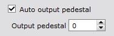
In the Preprocessing / Image calibration section there are settings for pedestal values.

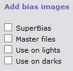

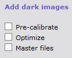

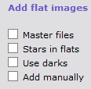

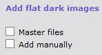
In each files tab there are also some settings for calibration. Defaults are selected so that they should work fine with modern CMOS cameras.
Calibration master files

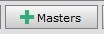
If you have master calibration files available for example from previous processing you can load them in the script using the Masters button. With the Masters button you can load all master bias, dark, flat and flat dark files. Files are auto-classified by IMAGETYP keyword and loaded into the correct tabs.

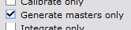
You can generate calibration master files with the script. If you load all bias, dark, flat and flat dark files to the script and run the processing using the option Settings / Generate masters only then master calibration files are generated and saved to the AutoMaster directory. No light files need to be loaded for generating master calibration files. After master files are generated they can be loaded to the script using the Masters button and used for calibrating light files.
YouTube video of image calibration
Fixing linear defects

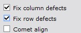
It is possible to automatically fix linear column and row defects by using linear defect detection algorithm from PixInsight LinearDefectDetection.js script. Defect information is used by CosmeticCorrection to fix the defects.
Binning

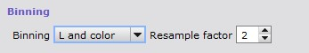
A software binning option is available for light files. It is done as the first operation for all light files or only for color channel files. It uses the IntegerResample routine for binning. For very noisy images binning should help to reduce noise at the costs of decreased resolution. If luminance data is good then it can be useful to do binning only for color data.
Blinking, sorting and filtering data
Blinking
It is possible to blink images in the file list by scrolling images with a mouse or arrow keys. This is useful for visually checking the quality of the images.

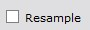
It is also possible to resample images to a lower resolution for blinking by selecting the Resample checkbox below the preview image. This is useful for large images where blinking would be too slow. Note that only the preview image is resampled, not the original image. Resample settings are in the Interface / Interface settings section.
Sorting and filtering file lists

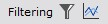
Filtering options are used to filter images using current weighting and filtering settings. Filtering settings are in the Preprocessing / Weighting and filtering section.

There is a button that can be used to sort and filter files in the file list. Filtering and sorting is based on current weighting and filtering settings in the Preprocessing / Weighting and filtering settings section. Without any filtering rules files are just sorted by the sort order given in the Preprocessing / Weighting and filtering settings section. Using the mouse hover over the file name you can see the filtering and weighting information for the file. Files that do not meet the filtering criteria are marked unchecked in the file list. Note that the filtering is only available in the Lights page.

There is also a button that can be used to visualize the current filtering and weighting settings. This button opens a new dialog that shows the current filtering and weighting settings. It is useful for checking how the current settings affect the file list and also update filtering settings if needed. When the dialog is closed, the file list is updated to show the current filtering. Note that dialog can be used also from the Preprocessing / Weighting and filtering section. For more details see the Metrics visualizer section.
Automatic filtering of bad files

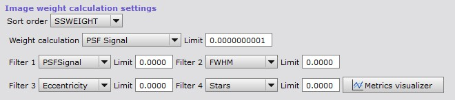
AutoIntegrate has a few ways to automatically filter out files based on image statistics calculated by the SubframeSelector process.
The simplest filtering uses a limit value for SSWEIGHT. Only files with calculated SSWEIGHT above the limit value are included. This is a good way to filter files if the expected SSWEIGHT values are known. Calculated SSWEIGHT values can be checked from the AutoIntegrate.log file after processing.
Additional image filtering is based on four measures. It is possible to filter images for example with PSFSignal, FWHM, Eccentricity and Stars values. Images that do not meet filtering criteria are not processed.
There are also a few ways to filter files by detecting outliers in the data set. This method does not require previous knowledge of the data. It can be useful in cases with huge data sets where filtering gets too complicated.

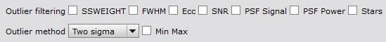
The following variables can be used for filtering outliers: SSWEIGHT, FWHM, Eccentricity, SNR, Star count, PSF Signal and PSF Power. Each variable is used independently to detect and filter outliers.
There are also three ways to calculate outlier filtering threshold values:
- Two sigma that filters out values that are two sigmas away from mean value.
- One sigma that filters out values that are one sigmas away from mean value.
- Interquartile range (IQR) measurement that is based on median calculations.
By default FWHM and Eccentricity are filtered for too high values, and all others are filtered for too low values. It is also possible to select filtering for both too low and high values.
Metrics visualizer

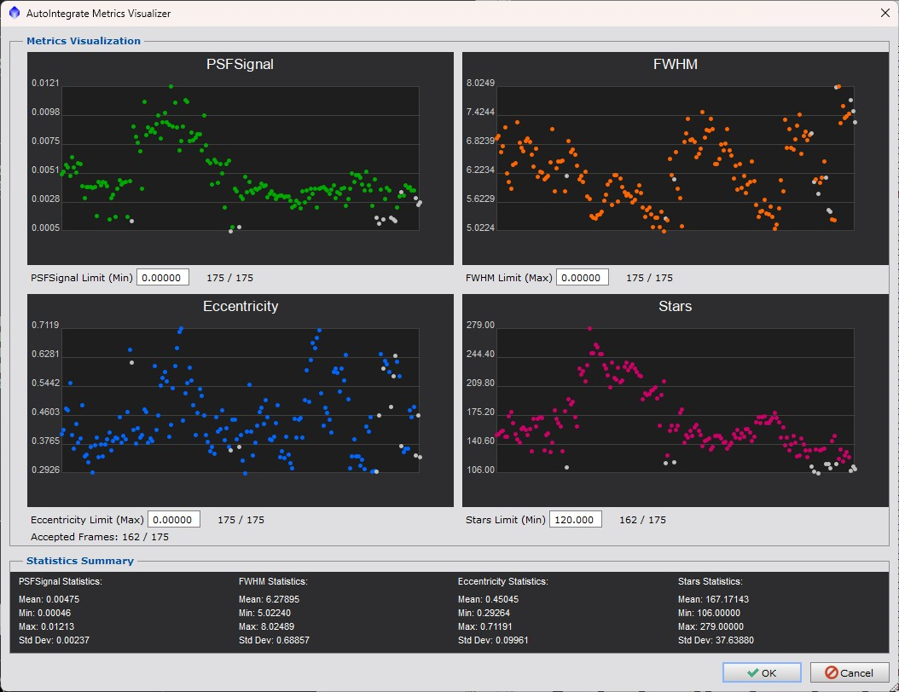
Metrics visualizer is a dialog that can be used to visualize the current filtering and weighting settings. It is useful for checking how the current settings affect the file list and also update filtering settings if needed. When the dialog is closed, the file list is updated to show the current filtering.
Metrics visualizer shows scatter plots for each selected metric. The plots show how the files are distributed based on the selected metrics. Each point in the scatter plot represents one file in the file list. Files that are accepted based on the current filtering settings are shown as a colored dot. Files that are rejected are shown as white dots.
Filtering values can be updated by changing the values in the limit edit field. Values can updated also by double clicking at the scatter plot.
Metrics visualizer can be opened from the Preprocessing / Weighting and filtering section or by clicking the Metrics visualizer button in the Files tab.
Requirement for the metrics visualizer is that the SubframeSelector process has been run and metrics has been calculated for the files in the file list. If the SubframeSelector process has not been run, the Metrics visualizer will ask if it should be run.
Metrics are always created when light files are processed. Once measurements are done they can be saved to a Json file using the save button. Measurements are also saved to the AutosaveSetup.json file. Loading this file will also load the measurements.